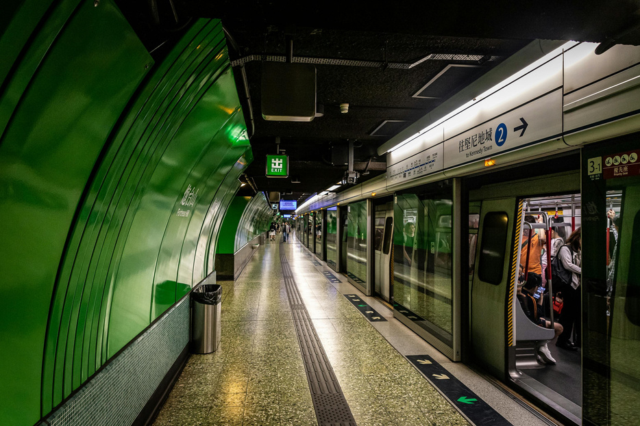

From Kowloon Tong MTR to CityU in 10 Minutes
CityU sits right next to Kowloon Tong station, which is on the Kwun Tong line (green) and the East Rail line (light blue). You never need to go up to street level. The indoor route through Festival Walk mall is faster, air-conditioned and dry when it rains.
The official route, step by step
- Follow the signs to Exit C (Festival Walk).
- Walk through the pedestrian subway and take the escalator up to the mall.
- Go up to level LG2, then up again to LG1.
- On LG1, find shop LG1-10 and take the escalator beside it.
- Walk through the CityU subway. It comes out on campus.
Shop names in Festival Walk change, so follow the green “CityU” signs rather than the shop names. CityU keeps an up-to-date map of this route.

How long it takes
From the platform to campus takes about 5 minutes. Add 5 more if your class is at the far end of the main academic building. In week one, add 10 extra minutes to everything.
Mistakes we made
Following Google Maps to street level (it sends you up stairs and across traffic lights) and not checking which platform our line arrives on. Kowloon Tong is a long station, so it pays to know your exit before you get off. For the rest of the network, see our MTR guide.